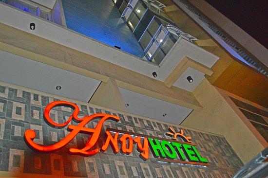
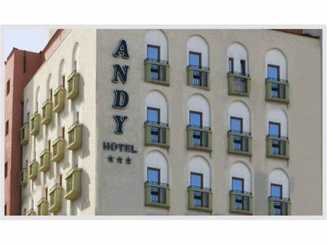
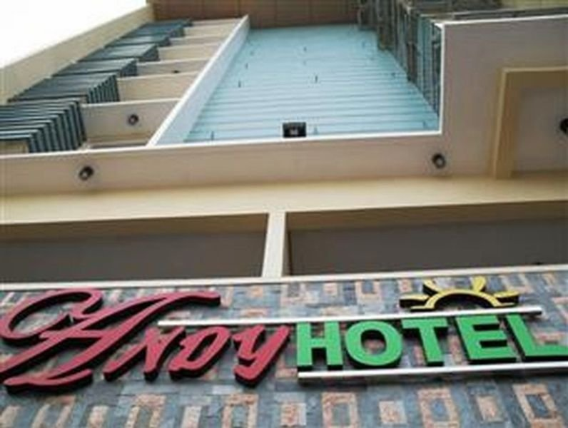
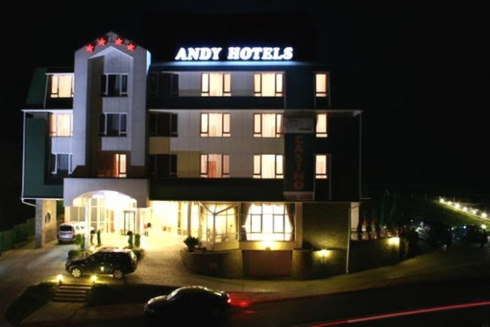

|  |  |
|  |  |
Si te hospedas en Andy Hotel, estarás a tan solo 10 minutos en auto de SM City Cebu y de Casino Waterfront Cebu City. Los huéspedes que deseen comer algo rico pueden visitar Mang Cape, que ofrece cocina filipina y abre sus puertas para el desayuno, el almuerzo y la cena. Además, Cruz de Magallanes y Calle Colón se encuentran a unos pocos minutos en auto.